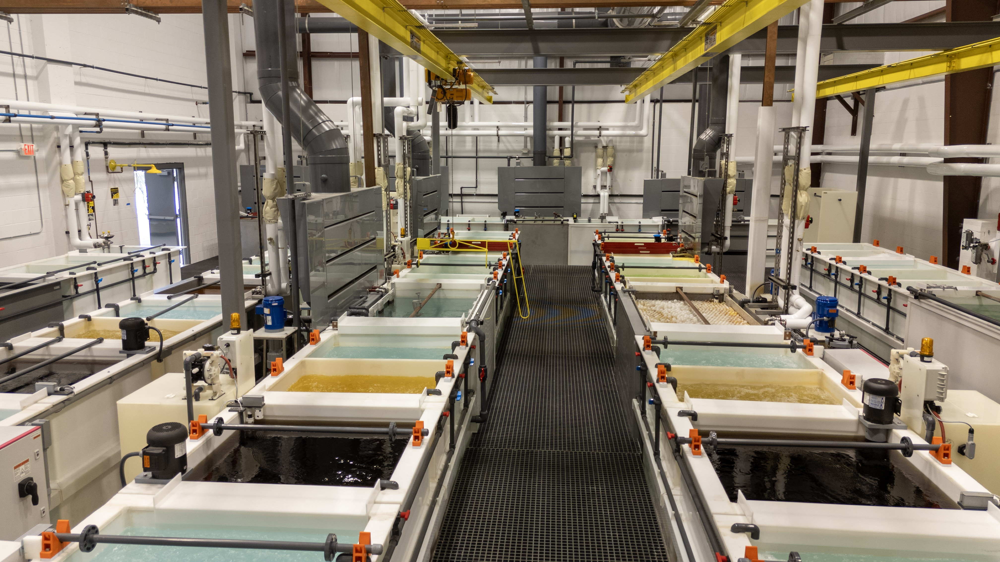
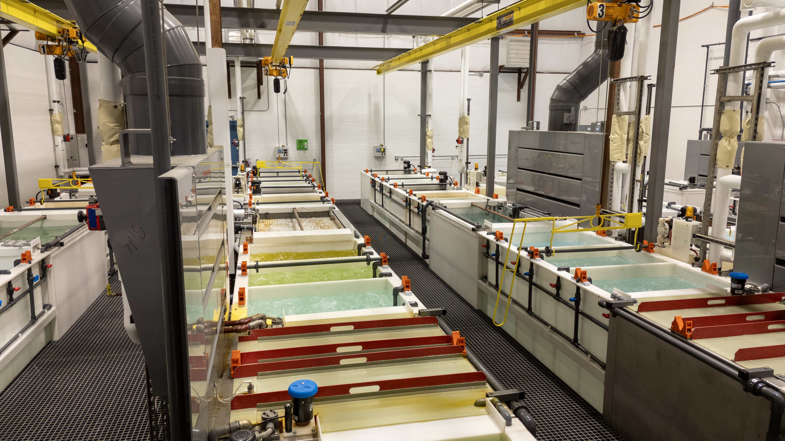
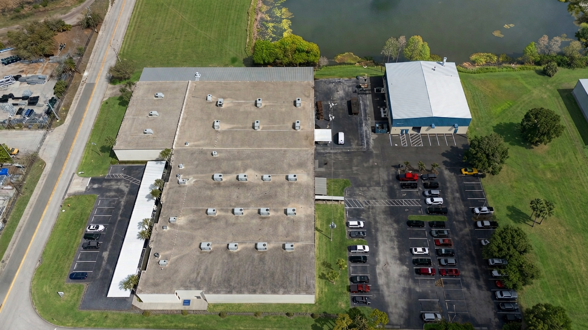
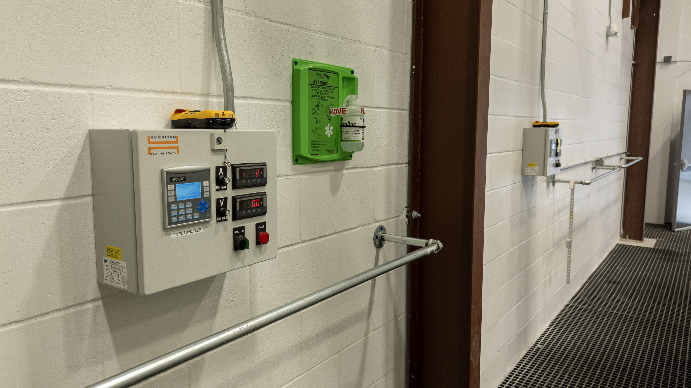
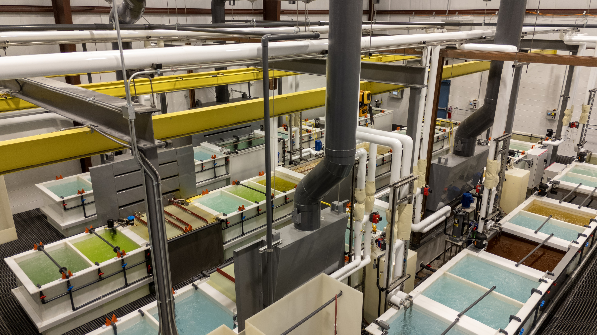
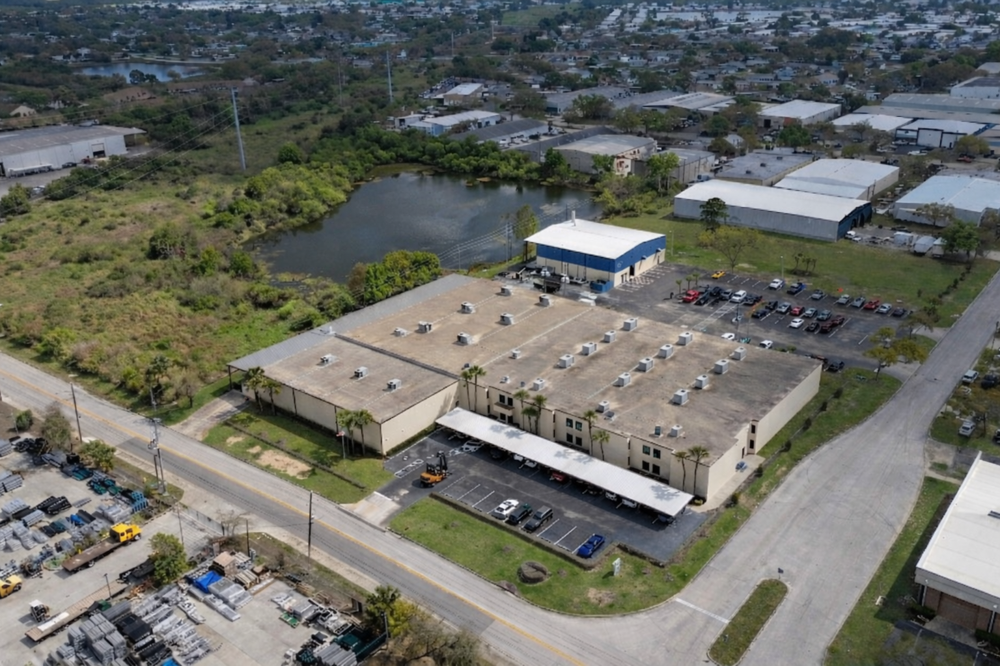

Anodizing
Chromic Type I, sulfuric Type II, and hardcoat Type III anodize options for aluminum components requiring corrosion resistance and surface durability.
Core Processes
Chromic Type I, sulfuric Type II, and hardcoat Type III anodize options for aluminum components requiring corrosion resistance and surface durability.
Conversion coatings that preserve conductivity while preparing parts for downstream assembly or paint systems.
Controlled treatment for stainless components where corrosion resistance and process repeatability matter.
Anodize
Chromate Conversion
Passivate
Facility Showcase

Clearwater, Florida
The expanded footprint gives Norris more room to route work efficiently, protect parts during handling, and reduce lead time without giving up process control.





Why It Matters
Surface treatment remains tied to the same quality culture governing machining and final inspection.
In-house finishing removes outsourced queue time and simplifies the route from production to shipment.
Process ownership helps preserve fit, finish, and dimensional intent on complex hardware.
Request a Quote
Share the part type, process needed, material, quantity, and timing. The more detail you include, the faster the team can review your request.